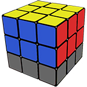
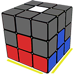
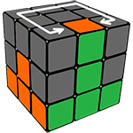
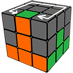
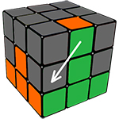
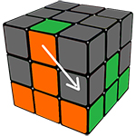
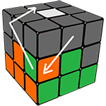
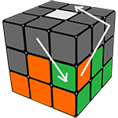

Шаг 3: сборка среднего слоя кубика Рубика.

Перевернем кубик. Теперь собранная желтая грань внизу, а вверху - белый центр. Так будем держать до конца сборки.

Найдите ребро без белого цвета, к примеру, зелено-оранжевое. Покрутите грань, пока одна из наклеек не встанет к своему центру (зеленый к зеленому).

Если зеленая грань не совмещается с зеленым центром, совместите оранжевый цвет. Т.е. у нас 2 варианта.

U' L' U L
U F U' F'
Выполните эти формулы (ребро переместится вниз и влево).

U R U' R'
U' F' U F
Ребро прыгает вниз и вправо - на свое место.
Оранжевым держим к себе

Типичная ситуация - искомое ребро уже стоит на своем месте, но неправильно повернуто. Тогда делаем одну из двух предыдущих формул - и "выбиваем" ребро со своего места.

Наше ребро выскочит наверх и вы уже сможете все сделать так, чтобы поставить его на свое место правильно.
